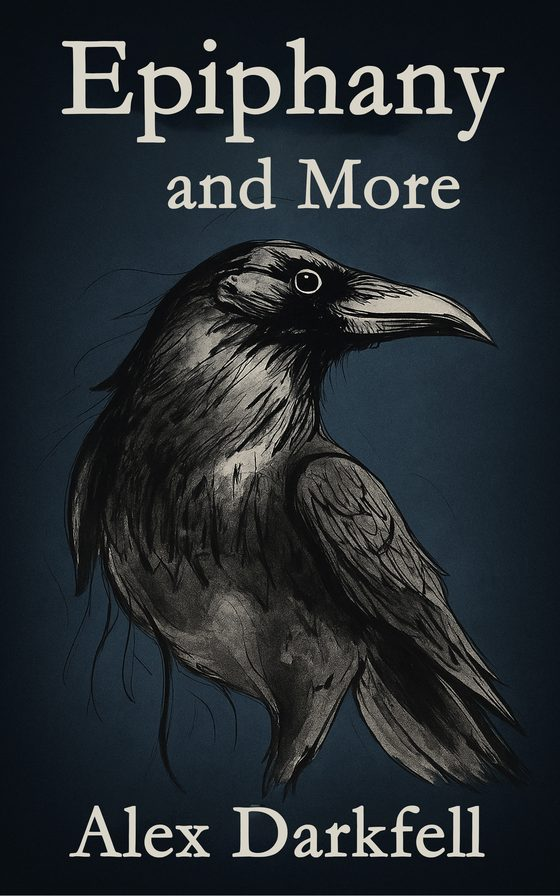
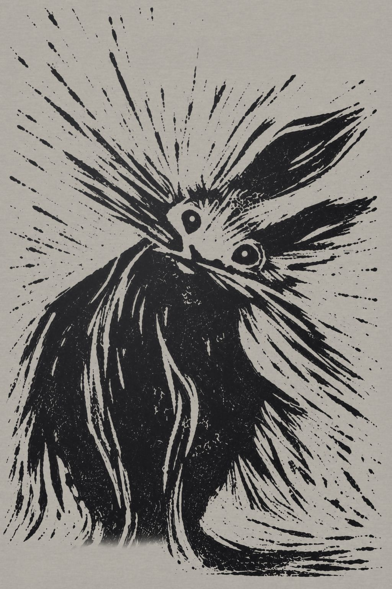
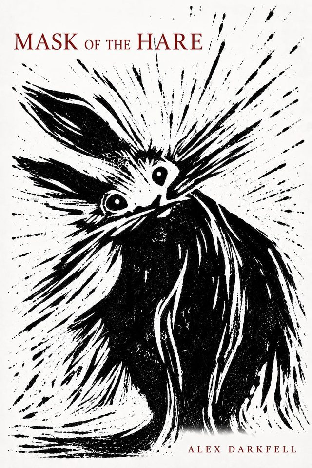
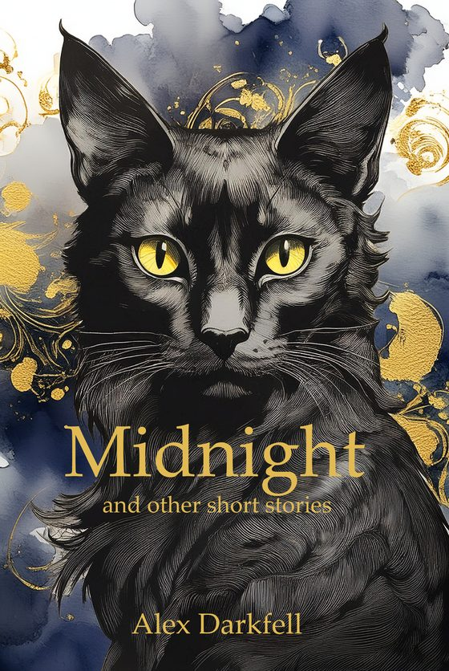
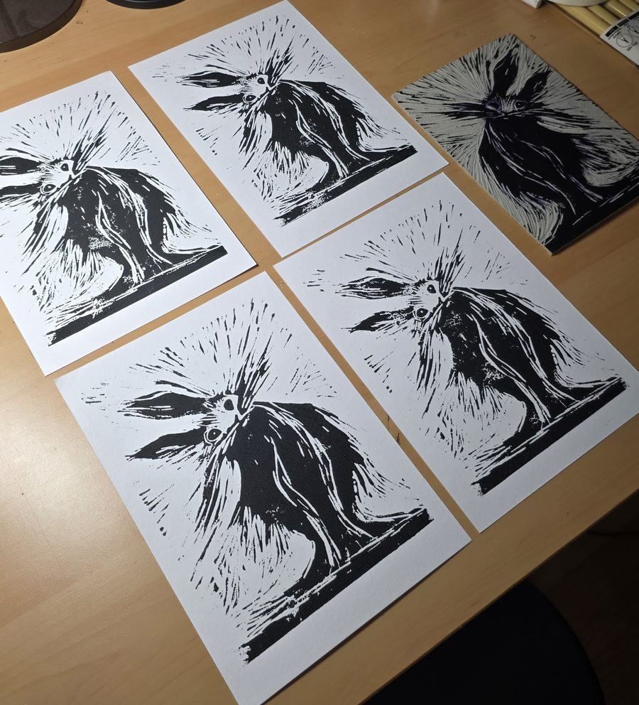

Epiphany and More
Thirteen short stories. Cornish, Norse and Japanese myth, re-imagined.
"Of Ivy and Teeth": two schoolgirls step into a forest clearing in search of the Green Bride. How many will walk out?
Signed, £12.50A homepage idea made by Sparsh Saini for Alex Darkfell. Not their official site.
Alex Darkfell

"My name is Tamsin Bray, and this is my confession..."Mask of the Hare
A folk horror novella
When Tamsin Bray's grandmother dies, she leaves behind a chest containing a single item: a carved mask in the shape of a hare.
"My name is Tamsin Bray, and this is my confession..."
When Tamsin Bray's grandmother dies, she leaves behind a chest containing a single item: a carved mask in the shape of a hare.
The mask shows Tamsin the truth she has never been told, and a burden she must carry to right past wrongs.
This is the story of what happened. This is also the story of what Tamsin had to become, for all who wish to know the truth.

Thirteen short stories. Cornish, Norse and Japanese myth, re-imagined.
"Of Ivy and Teeth": two schoolgirls step into a forest clearing in search of the Green Bride. How many will walk out?
Signed, £12.50
Fourteen stories where folklore and myth collide with the modern world.
"Midnight": a witch's black cat overhears a plan to cast The Night Spell, and has to rally the city's magical creatures to stop it.
Signed, £10Every story opens with a note from me on where it came from. Readers on Goodreads keep bringing those notes up.
I write folk horror and mythology inspired fiction that blends psychological horror, folklore and fantasy, always with a strong human element at its heart.
I live in Wiltshire, England, just ten minutes from Stonehenge, with my partner, two kids and our labradoodle, Sonic. I write, draw, paint and print, and I made the Mask of the Hare cover by hand.
"To me, the cover is part of the story itself."From my post on making the cover
The hare started as white chalk on black paper, then I cut it into lino and printed it by hand. Every print comes out a little different. The first run is 20 prints, and when they're gone, they're gone.
Or find me in person at YALC London, 31 October and 1 November 2026, with the Indie Rebels at tables 45 and 46.
